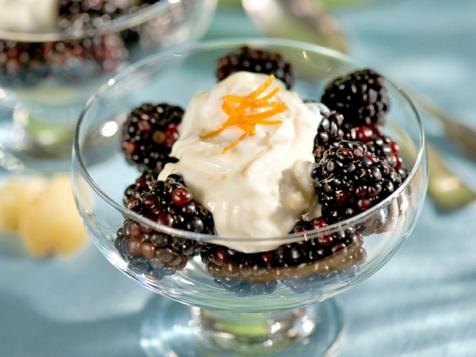

Home
Berry Easy Desert

Description
Easy quick and great for last minute desert. Your guests will love this and never know how easy it was to make!
Ingredients
- 1 pint good quality Greek style plain whole milk yogurt
- 4 to 5 pieces crystallized ginger, grated
- 1/4 to 1/3 cup honey, look for orange blossom, clover or sage, plus some for drizzling
- 1 orange zested
- 2 pints blackberries
Directions
- In a bowl combine the yogurt, grated crystallized ginger, honey and orange zest.
- Let the yogurt mixture sit for about 5 minutes, the flavors will meld together a bit.
- Divide the blackberries between 4 dessert bowls, top with a large dollop of the yogurt mixture and then give each dollop a drizzle of honey for a sweet finish.